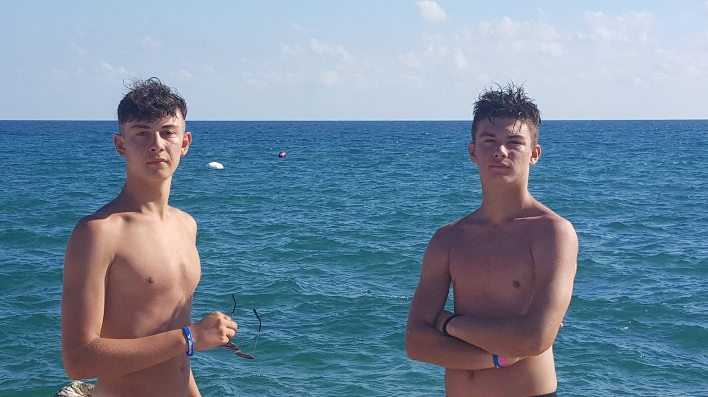

Si chiamano ringraziamenti, ma diciamo che mi sono laureato io, gli esami li ho dati io, tesi fatta io e scritta da me (no scherzo questo l'ha fatto chat), quindi alla fine non ho nulla per cui ringraziarti a riguardo. Sfrutto però l'occasione per farmi i complimenti da solo, perchè grazie al mio strano, a volte fastidioso, spesso decisamente ingiusto e con tratti dittatoriali sovietici metodo di educazione sei diventato veramente un bell'UOMO. Bello non solo esteticamente, che quello è semplicemente botta di culo e ampia cura personale dovuta al tuo tratto un pò ricchioncello, ma bello perchè è un piacere vedere come affronti la vita, come tutto ti possa colpire ma nulla ti possa abbattere, come quando decidi di volere una cosa la ottieni e non perchè ti viene regalata, ma perchè te la guadagni. Hai affrontato e vissuto già mille vite diverse in ventanni o quanti circa ne hai e, salvo varie cazzate, te la sei sempre cavata egregiamente. Ormai non posso neanche più dire che sei una zecca succhiasoldi, stai mettendo in questo tuo primo lavoro cuore e anima come hai sempre fatto con tutto e i risultati si vedono in tempi straordinari. Cuore e anima spesso non bastano, ma tu hai la fortuna di essere anche bravo, perchè se uno non è bravo certe cose, per quanto si possa impegnare, non arrivano. Insomma continua così in modo che io possa essere sempre più fiero del lavoro che IO ho svolto per renderti quello che sei. BRAVO ZIOPUZ